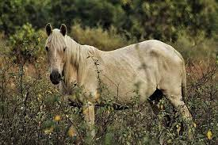
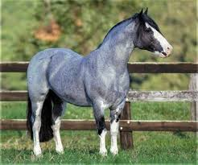

La Asociación Criadores de Caballos Criollos (AACC) lanzó el primer programa solidario organizado por la entidad, en colaboración con entidades que trabajan en el área de la Equinoterapia. La iniciativa busca constituirse en un sistema de apoyo a las organizaciones que realizan Actividades y Terapias Asistidas con Equinos (AyTAE).
El objetivo del programa es canalizar mediante la ACCC la búsqueda de animales para desarrollar AyTAE, a través de criadores socios de la entidad de todo el país que contacten a entidades que realizan estas actividades a fin de facilitarles el acceso a ejemplares de la raza, una de las más indicadas por sus características morfológicas y de temperamento para realizar esta tarea.
El Caballo Criollo, ideal para la Equinoterapia
La terapia con caballos es un trabajo terapéutico que, aplicado dentro de un abordaje interdisciplinario, utiliza al animal como herramienta para alcanzar objetivos de rehabilitación, integración y desarrollo tanto físico como psicosocial de personas con necesidades y/o capacidades diferentes. Así, mediante la interacción con el animal los pacientes mejoran su calidad de vida.

Para ello la iniciativa de la AACC cuenta ya con el aporte de cuatro entidades regionales la Fundación Santafesina de Equinoterapia El Carmelo, de Rosario, Santa Fe; la Fundación Equinoterapia del Azul, de Salta Capital, el Centro de Equinoterapia del Regimiento de Granaderos a Caballo Gral. San Martín el Servicio de Equinoterapia y Rehabilitación Ecuestre del Hospital Militar Central, de la CABA.
Por caballo criollo se conoce a una raza equina que se distribuye por toda América del Sur, en América Central y América del Norte. En los distintos países del continente se ha ido desarrollando de diverso modo
Tipo:Caballo
Peso: Promedio de 450 kg
Pelaje: negras extremidades, castaño, bayo, gris
Cabeza: Perfil de la cabeza convexa
Morfología: Compacto y fuerte, la cabeza recta o convexa, de pecho ancho, articulaciones bien desarrolladas, de pequeña estatura
Carácter: Frugal y perdurable.